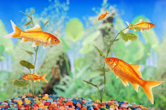

What you need to know
Think of your fish as pets and you’ll agree, they deserve the best care and attention you can provide. They rely on you to keep their environment healthy. A healthy aquarium is relatively easy to achieve and maintain, but it will not happen by itself. It depends on you. In rivers, lakes and oceans, water is cleansed and filtered naturally. In an aquarium, it’s a different story. In order to keep aquarium water clean and healthy, you must help. This means taking care not to overcrowd the tank or overfeed the fish. It means changing some of the water regularly, cleaning the gravel bed and providing the proper filtration.
Healthy Tips
- 1. Acclimate your fish. Fish are fragile. For best results, ask the store associate what their water parameters for nitrate, nitrite, ammonia and pH levels are. When home, test your aquarium water for its chemistry. The greater the differences, the longer you need to acclimate your fish.
- 2. Float your fish. Float the sealed bag of fish in your aquarium for at least 15 minutes but no longer than one hour to allow for temperature acclimation.
- 3. Room to roam. Overcrowding can lead to low oxygen levels in the water.
- 4. Condition the water. Water for fish is like air for humans. It is critical to your fish's long-term health.
- 5. Maintain proper pH Levels. pH measures the acidity or alkalinity of your tank water. Buy a pH test kit and use it to check the pH level.
- 6.Replace aquarium water.. It is recommended to change 25 percent of your aquarium water at least once a month. This will help maintain a clean and healthy tank.
- 7.Clean the sides of the tank. Not everything that's green is a good thing. Algae buildup on tanks cloud the glass, gives water a murky look, and depletes oxygen.
Purchasing
For the best places to purchase you new friend, click below to find out more!